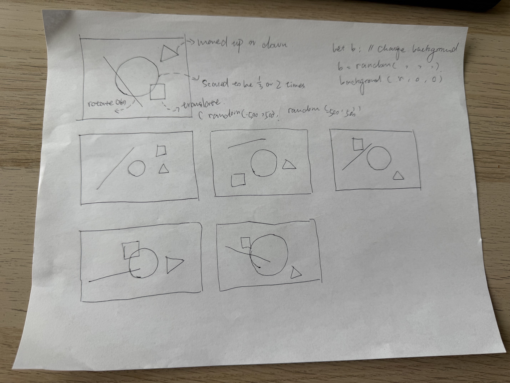
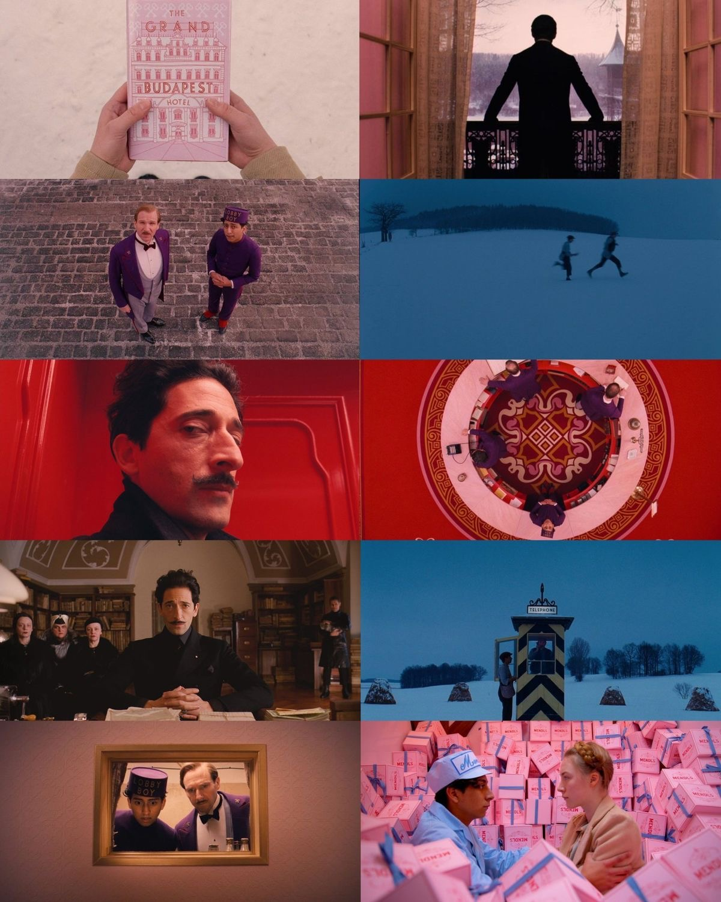

This piece began with a few very simple geometric shapes. I chose circles, straight lines, triangles, and squares, and set different transformation rules for each shape. Circles change size, straight lines rotate randomly, triangles move only up and down, and squares move randomly across the canvas while changing size. Each time you click the canvas, all the shapes generate new variations, and the colors are also randomly reset. I drew inspiration from the color palette of *The Grand Budapest Hotel*, selecting vibrant, high-contrast colors to ensure that each generated image looks slightly different while still maintaining a consistent visual style.
Compared to my initial concept, I made two modifications later on. The first was to the square’s movement. At first, aside from the triangle moving up and down, the positions of the other shapes were relatively fixed, so the overall changes weren’t very noticeable. Later, I made it so the square could move randomly across the entire canvas and change size, adding more randomness and unpredictability to the image with each click. The second change was to the colors. Initially, I wanted to draw inspiration from Pop Art by using bright, high-contrast colors, but I later found that the constant color shifts caused some visual fatigue. So, I switched back to the color palette from *The Grand Budapest Hotel* to make the overall look more pleasing and harmonious.
